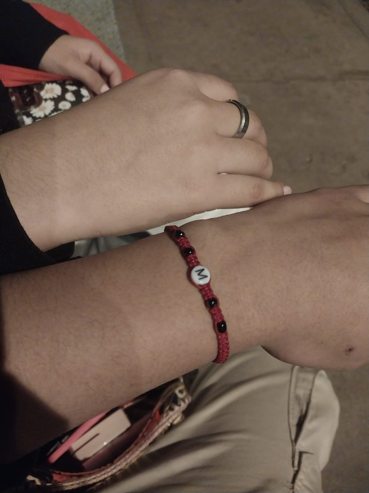
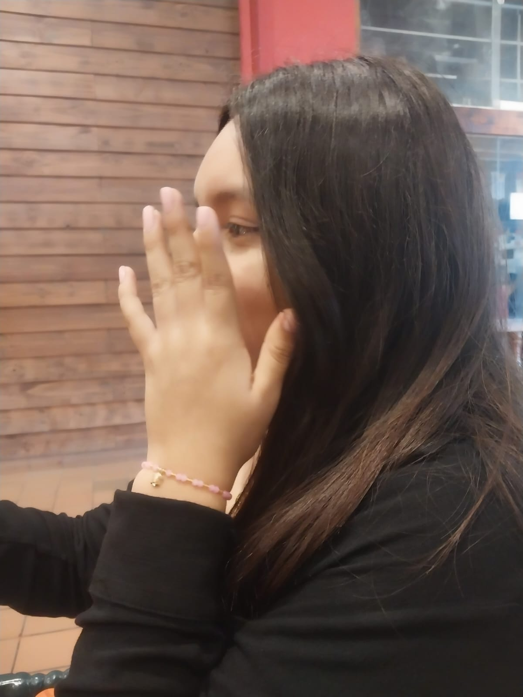
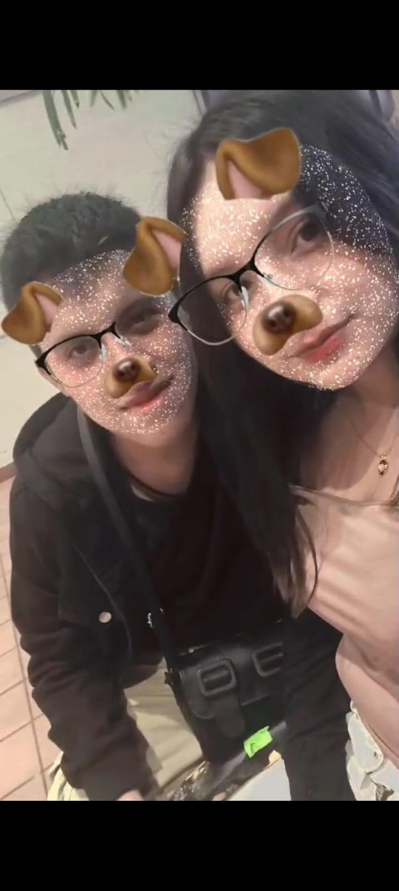

Nuestros Recuerdos
Hay momentos que duran segundos, pero se quedan para siempre en el corazón.
Cada fotografía guarda un instante, cada sonrisa cuenta una historia y cada recuerdo me recuerda lo bonito que es tenerte en mi vida.
Descubrir nuestros momentos ↓Pequeños instantes, grandes sentimientos
Si pudiera volver a vivir cada momento, volvería a elegir compartirlo contigo.

Un momento especial ♡
♥
Contigo todo es bonito ✿

Mi sonrisa favorita ♡
✿Momentos que viven para siempre
Porque algunos recuerdos merecen volver a sentirse.
Un pedacito de nuestra historia ♥
Oye, Meel... ♡
No sé qué tienes, pero últimamente tienes la costumbre de aparecer en mis pensamientos sin siquiera avisar. Y lo peor es que tampoco me molesta, jajaja.
Tú por Huacho y yo por Lima... Quién diría que unos cuantos kilómetros iban a hacer que me dieran tantas ganas de verte. A veces me acuerdo de ti, de nuestras conversaciones y de esos momentos que me sacan una sonrisa sin darme cuenta.
Y aunque no siempre te escriba, no significa que no me acuerde de ti. Hay días en los que quisiera tenerte cerquita, molestarte un ratito, hacerte reír y, si te dejas, robarte uno que otro beso.
Solo espero que nos veamos pronto. Porque hay una sonrisa que tengo pendiente contigo, y quizás un abrazo que dure más de la cuenta.